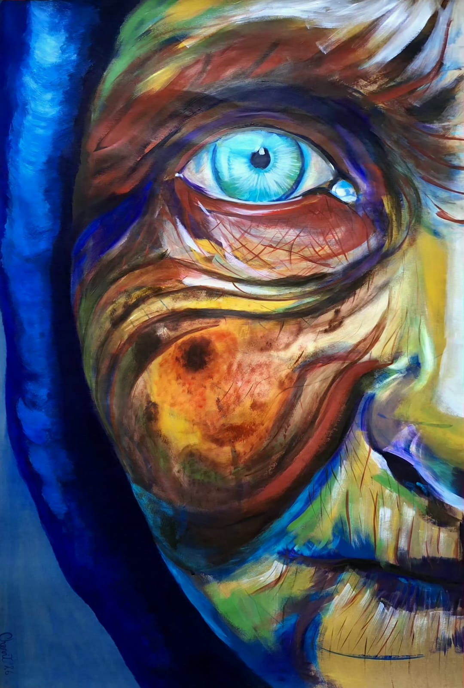

Interactuar
con mi obra
¿Qué sucede cuando el espectador deja de observar y comienza a intervenir?
Explorar la obra ↓
De observar
a intervenir
Esta experiencia parte de mi producción pictórica y de mi investigación sobre el rostro y la mirada. La pintura deja de ser una imagen inmóvil: la acción del espectador puede marcarla, descubrirla, desplazarla o provocar una respuesta visual.
Huellas
La mirada funciona como núcleo de la imagen. ¿Qué sucede cuando la presencia de quien observa transforma lo que está mirando?
Tu acción deja una huella
Elegí una forma de relacionarte con la pintura. Cada experiencia propone un gesto diferente.
Mové el cursor o el dedo sobre la obra.
La imagen conserva las marcas de quienes la recorren.
Una obra + un espectador + distintas formas de intervenir.
Más allá de la pantalla
En una futura exposición, un código QR podría abrir esta experiencia y extender la relación entre la pintura física y su versión digital.